a saga da máquina de lavar
hoje, depois de muito mais tempo que eu gostaria que essa saga tivesse tomado, a saga da máquina de lavar acabou. pra você entender o tamanho do pepino que caiu nas nossas mãos, eu vou contar essa história em ordem cronológica, desde o começo:
no dia 3 de julho desse ano, a nossa máquina de lavar tava fazendo bastante barulho. essa é uma máquina de mais de 13 anos que tá velha e caduca, então eu só fechei a porta da cozinha e deixei o pau quebrar. mal sabia eu que esse era o primeiro link da corrente de eventos. pouco tempo depois, quando cheguei na cozinha, tinha água vazando da máquina. desliguei ela, chamei o lucas, meu companheiro, expliquei a situação, esvaziamos o tambor da máquina e decidimos por, no dia seguinte, chamar um cara pra ver.
aqui, eu preciso te dar um pouco mais de contexto sobre essa máquina de lavar: é uma máquina MUITO boa. uma máquina de mais de dez anos que por um tempo foi da minha mãe e, quando ela quebrou na casa da minha mãe há uns 3 anos atrás, ela decidiu por trocar a máquina dela e eu, como boa filha, passei a mão. pedi pra ela avaliar com o técnico o que precisava comprar, porque a peça que faltava era muito cara — em falta no brasil, inclusive, precisava procurar nuns sites chineses e tentar dar um jeito de comprar internacionalmente. assim eu fiz, chamamos o técnico, ele reviveu a máquina e ela foi pro meu apartamentinho da época. era um apartamento de 45m2. a máquina era ENORME. pesadíssima. um inferno de consertar, transportar, remontar, entregar. mas deu certo. a minha cozinha no apartamento era minúscula e a máquina ocupava a área inteira, mas era PERFEITA. 14kg. é um tamanho de máquina que te permite esquecer de lavar roupa até sobrar só uma calcinha na gaveta e você se dar conta, muito tarde, de que talvez seja hora de lavar roupa. era um SONHO.
e permaneceu sendo!! depois, eu me mudei junto com o lucas pra um apartamento maior e a máquina precisou ser desmontada e as portas precisaram ser retiradas da casa pra máquina passar, porque o prédio em que a gente mora agora tem portas finas porque é antigo. deu um trabalho do cacete e foi muito caro e a gente sustentou esses mini desconfortos porque essa máquina valia, genuinamente, a pena. e uma vez que a máquina já tava aqui também não tínhamos opção a não ser dar um jeito de entrar com ela risos
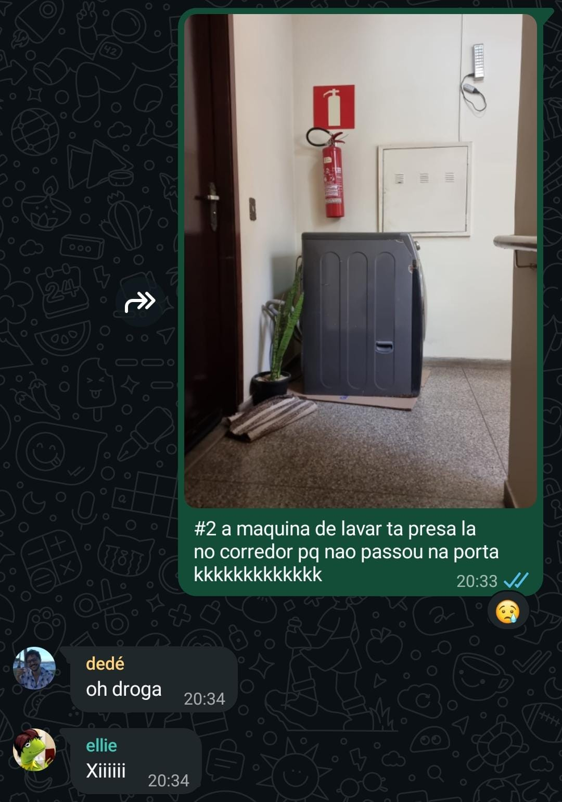
print de uma mensagem minha num grupo de amigos quando a gente se mudou pra cábom, chegou o dia seguinte. sabíamos que teríamos que aceitar, a contragosto, gastar provavelmente muito dinheiro com um problema que a gente não esperava — e ainda descobrir se essa gastança seria com uma máquina nova ou com o conserto da antiga.
nesse momento, eu e lucas ainda estávamos em fases variadas do luto:
ah, outra informação importante: essa máquina tinha a parte de baixo completamente enferrujada. a ponto de, quando ela chegou aqui em casa, a gente ter precisado colocar um papelão embaixo dela que foi ficando exponencialmente mais nojento conforme os anos nessa casinha se passaram.
aí sim, o cara chegou pra avaliar a máquina pra gente. ele entendeu que o eixo dela tava quebrado e avaliou que ia custar, em média, uns 3 mil reais pra consertar — por isso, não compensava. decidimos, com muita tristeza no coração, que íamos arrumar uma máquina de lavar nova. até aí, ainda acreditávamos que a máquina valia um bocado (afinal, era uma máquina muito boa) e então tentamos conversar com os contatos que o moço da manutenção tinha pra indicar, pra ver se alguém queria.
nesse momento da história começou, sem a gente saber, a novela do descarte: chamamos diversos lugares pra ver se alguém queria buscar/comprar a máquina (pensamos que talvez um ferro-velho fosse querer?), mas foi tão frustrante que decidimos deixar pra resolver quando a máquina nova chegasse.
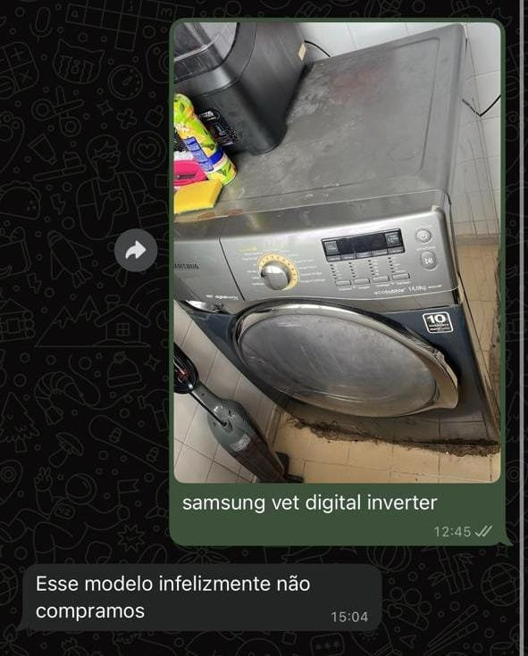
a única proposta séria veio de um ferro-velho: setenta e cinco centavos o quilo. ela tinha uns 80kg? uma máquina pesadíssima por uma bagatela.
uma tangente - aqui também tive um momento das lamentações com minha mãe, chorei as pitangas reclamando de quanto dinheiro a gente ia gastar com isso tudo, contei como tava frustrada e ela se dispôs a me ajudar com a máquina que a gente escolhesse. agradeci um bilhão de vezes, sentamos juntas e fizemos a compra.
bom - entendemos que não íamos vender. vamos entender, então, como descartar. quando fui pesquisar no site da samsung, vi que tinha um negócio chamado eco troca. basicamente, a empresa que vende os eletrodomésticos é responsável pelo descarte correto e consciente deles.
só de lembrar me dá raiva!!!!
a samsung tem um formulário no site deles. não um número pra vc ligar, mas um formulário cuja única ação disponível é esperar alguém entrar em contato com vc - que é o que eu MAIS ODEIO fazer. mas foram as cartas que saíram, então esperamos. eles entraram em contato quinze dias depois, com um atendimento terrível, spammaram um monte de mensagem no whatsapp, mudaram a data de busca um dia antes e, chegando aqui, se recusaram a levar pq tava muito perigoso. resumi tudo dessa parte num parágrafo porque ir rever os prints me irritou demais e não quero passar por isso agora.
tava mesmo, mas impossível não era, afinal, a gente que não é profissional nisso levou a máquina até a sala, agora era só descer com ela 😭

entrei em contato com um lugar em BH que chama BH Recicla, combinei com eles de virem buscar no dia 22 de julho.
consegui marcar de buscar a máquina de lavar, mas um aviso em negrito na mensagem dizia que eles não desmontavam. no que eu só posso chamar de um pico súbito da audácia gay, pensei "quão difícil pode ser desmontar?" arredei a geladeira, tirei a porta com ajuda do lucas, desmontei o que consegui. isso fez uma bagunça do cacete e me deu dor no corpo por dias. mas pelo menos tava perto de resolver? né???? por favor?????????
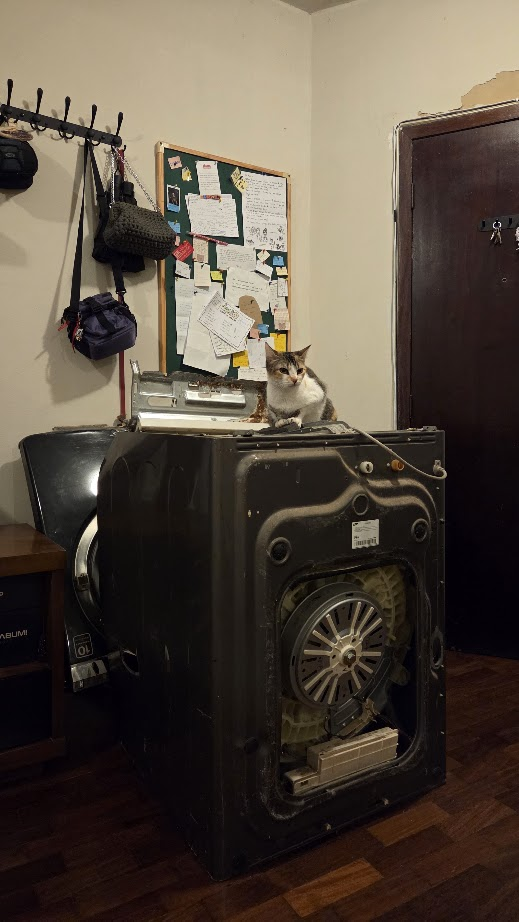
primeiro dia dessa filha da puta desmontada, na sala, onde ela ficou por MUITO mais tempo do que devia.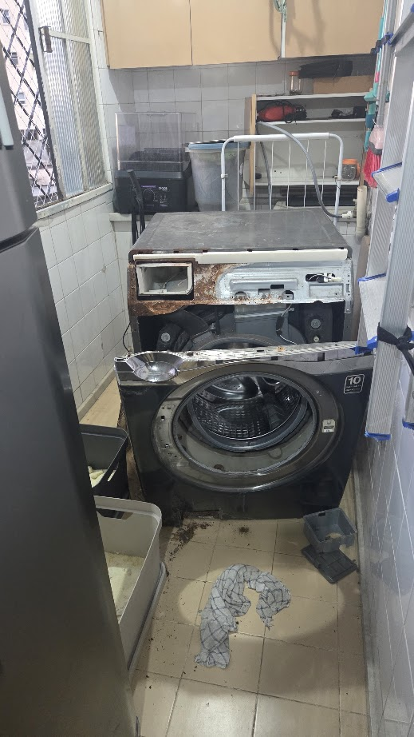
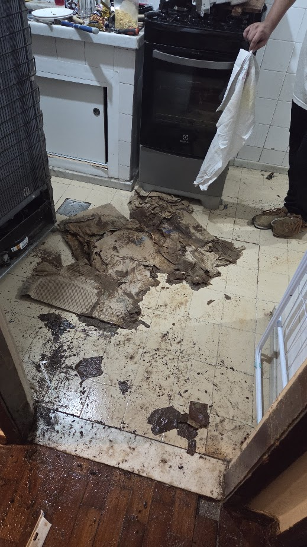
o pedaço de papelão nojento desintegrado que tava embaixo da máquina de lavar pelos últimos três anos pegando sol e chuvabom, não deu certo. o BH Recicla marcou essa data comigo, mas eu precisei estar na casa da bruna nesse dia - eu moro a cinco minutos, então pedi pra me ligarem. eles falaram que ligariam. não fizeram.
pensei bom, que se foda então. procrastinei por mais vários dias. desisti do BH Recicla. a essa altura, a máquina nova ia chegar a qualquer dia, então eu meio que decidi que tentaria resolver de novo nessa data.
nesse meio tempo, a compra que eu tinha feito com minha mãe tinha sido cancelada. a essa altura, eu já tava sem saco de pensar nesse problema e decidi refazer a compra com minha mãe e pensar em tirar a carcaça da sala quando ela chegasse. já tava lá mesmo.
aqui, fomos viajar, como já tínhamos planejado tinham uns meses, descansamos um pouco e voltamos, novos, pra resolver o problema.
e ela chegou!! ela chegou bem bonitinha e, em outro ímpeto de audácia gay, eu desembalei sozinha a máquina e coloquei ela no suporte que compramos, enquanto o lucas terminava uma reunião, pq eu tava ansiosa demais pra ver ela no suporte.
há uns dias eu tinha reclamado no grupo do entreblogs dessa saga toda e o pedro dalbó me indicou procurar no cataki, esforço que tinha dado errado uma vez antes:
mas resolvi dar outra chance. afinal, que opção nós tínhamos? pra evitar fadiga, fiz uma mensagem base com as informações da coleta e mandei pra deus e o mundo (todas as pessoas do app que tinham opção de contato por whatsapp). eu só precisava que um desse certo!!!
um queridíssimo careca nos respondeu, cobrou 80 reais.
ela deu muito mais trabalho que o planejado, é claro.
quando chegou aqui viu que teve que terminar de quebrar a máquina pra ela passar na porta e o valor virou 150 reais. mas FINALMENTE, depois disso tudo, a carcaça da máquina de lavar FOI EMBORA.
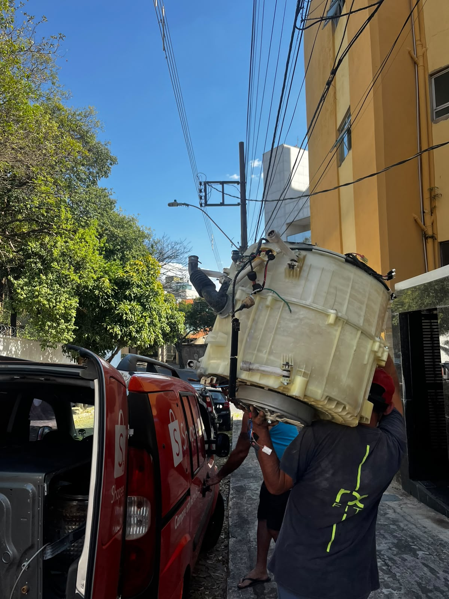
os pedaço vei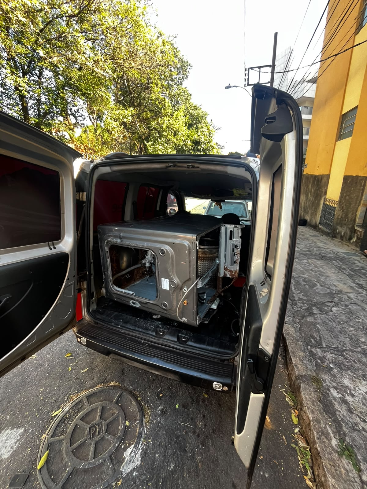
essa última etapa aconteceu na quinta-feira, e ficamos com a máquina nova (e toda a bagunça na casa da máquina antiga) até sábado, pq foi uma semana bem corrida e tínhamos que parar pra instalar a máquina. chegou o sábado e depois de acordar às 14h00 como merecíamos, instalamos a nova e fizemos a Maior Faxina Do Mundo™ pq a casa estava IMUNDA.
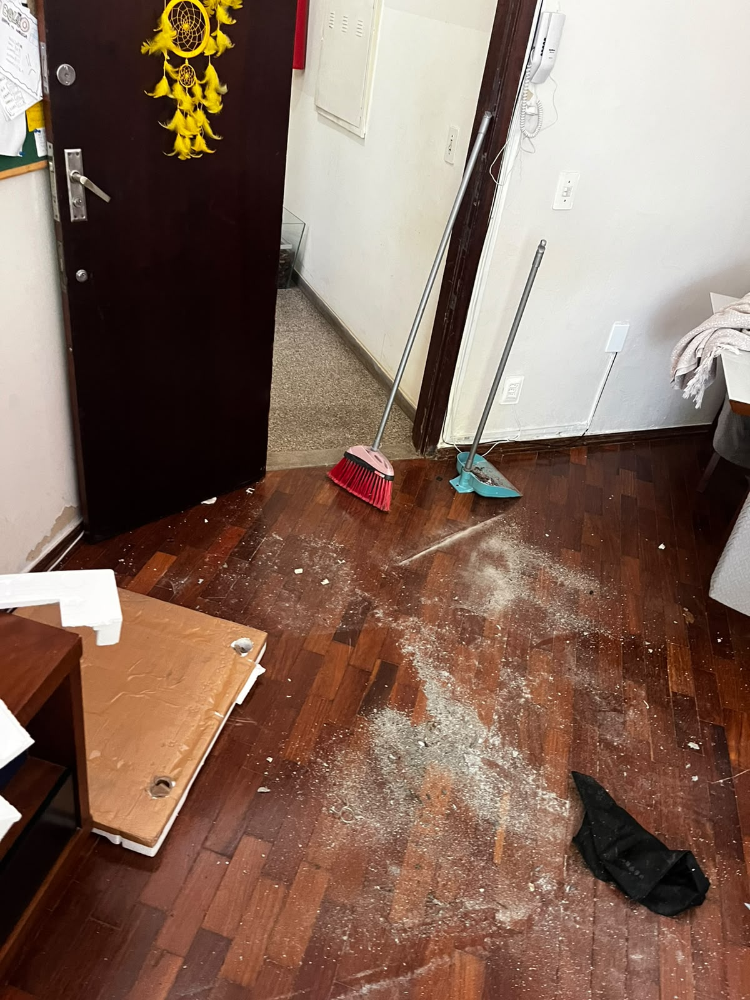
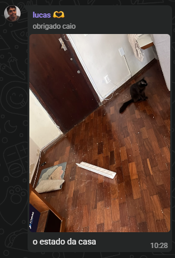
mas é isso. ontem fizemos uma MEGA faxina, talvez mais a fundo do que qualquer outra que tivéssemos feito antes nessa casa, e instalamos a máquina nova. pra inaugurar, lavamos a nossa coberta favorita, que saiu quentinha e pronta pra ir pra cama.
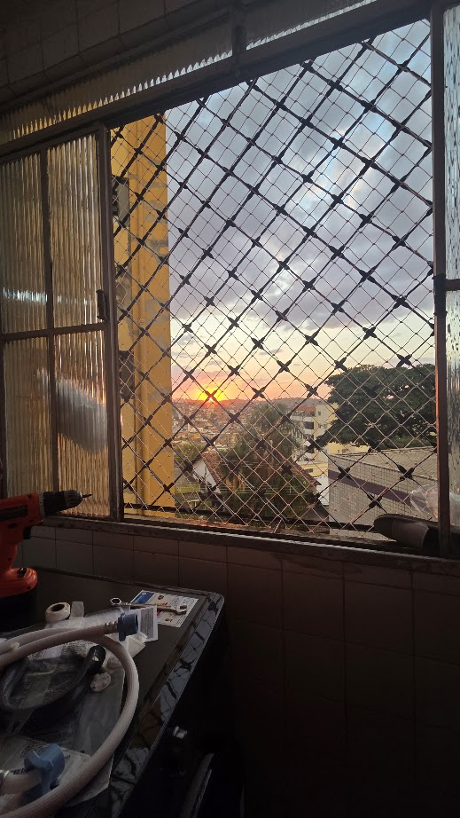
15 de agosto, nós terminando de montar a máquina de lavar de frente a um pôr-do-sol que simboliza o fim de uma era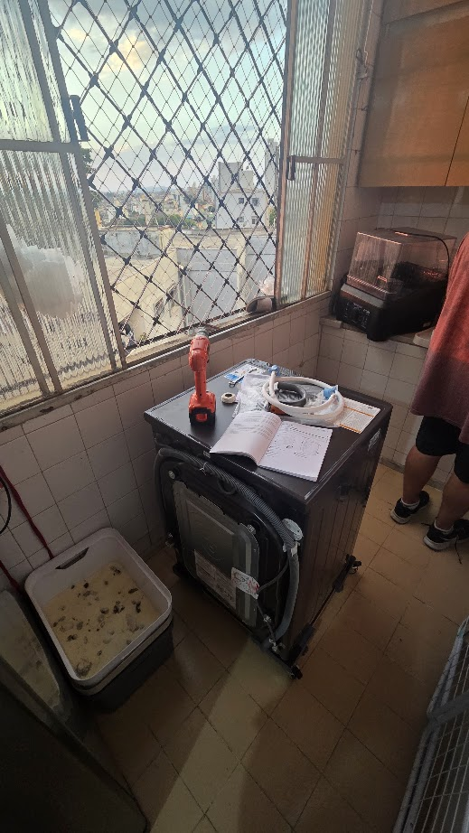
pôr do sol com a máquina nova (por favor, ignore a caixa de areia)agora ela tá lá, secando nossas roupas dessa semana.
amou?

comentários
ninguém comentou nada ainda. quer me falar o que vc achou?
não foi possível carregar os comentários agora.